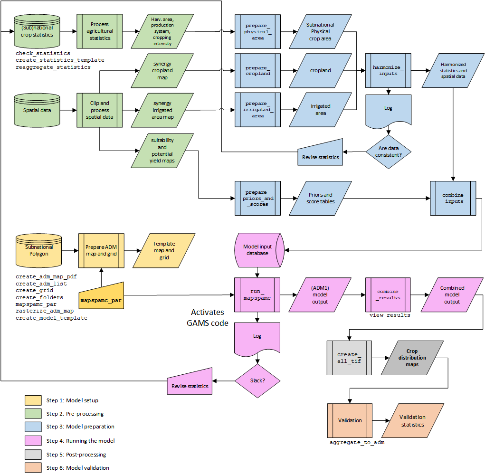

The mapspamc package includes functions to facilitate
all six major steps to create crop distribution maps, including (1)
model setup, (2) pre-processing, (3) model preparation, (4) running the
model, (5) post-processing and (6) model validation. The figure below
presents a flow chart with all six steps, interconnections and key
functions. Each step is discussed in a separate vignette.

Six main steps to create crop distribution maps with
mapspamc Functions printed inside flow chart shapes
implement key model steps, while functions printed outside have
auxiliary purposes